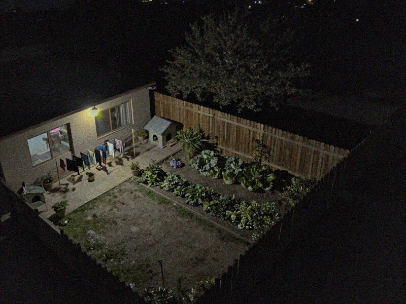
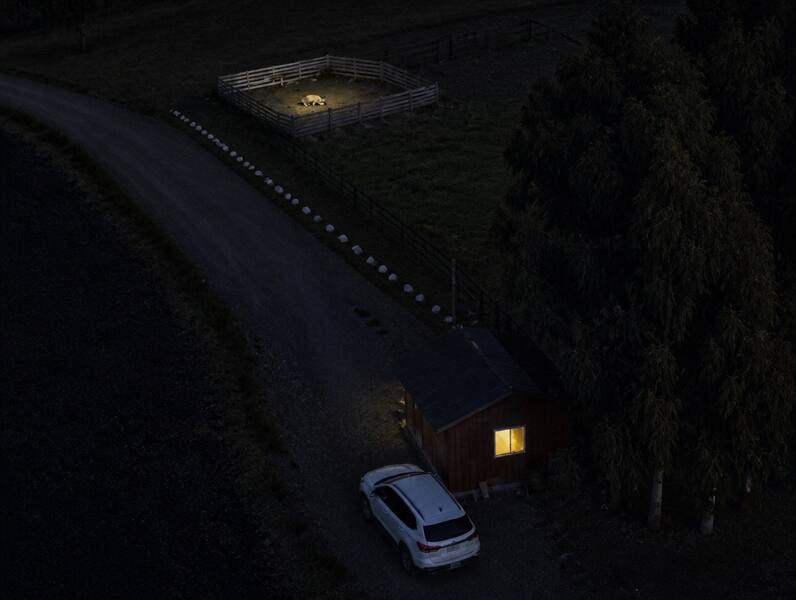
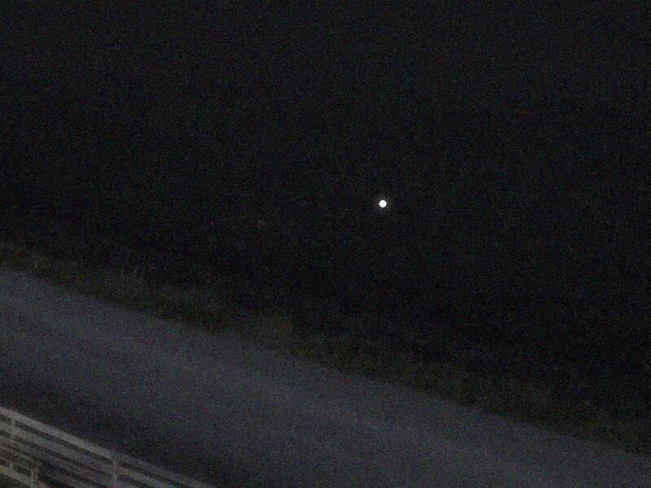

Evidencia digital · aportada por K. HuenchumillaVideo de dron · viernes 30-10, 22:45 a 22:55
E09Cuadros del video del dron



 Open CaseEl Chupacabras de Labranza
Open CaseEl Chupacabras de Labranza


Open CaseEl Chupacabras de Labranza